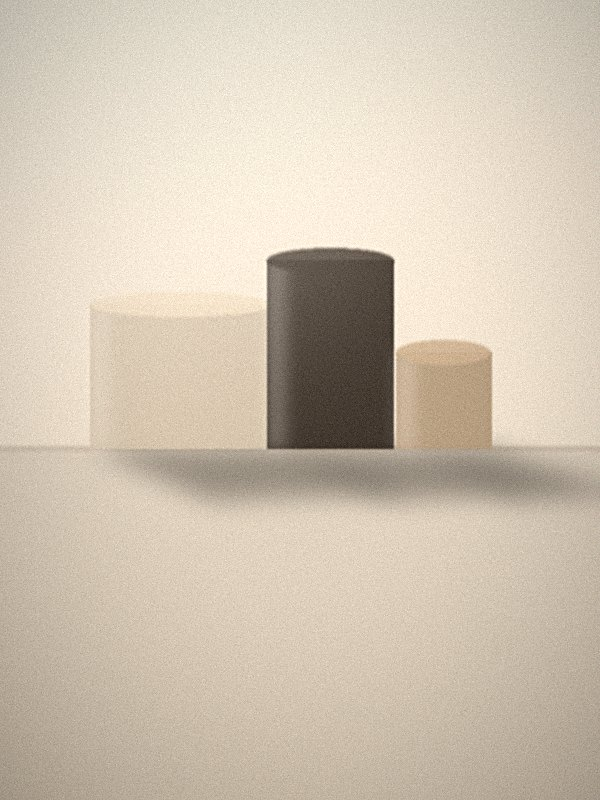
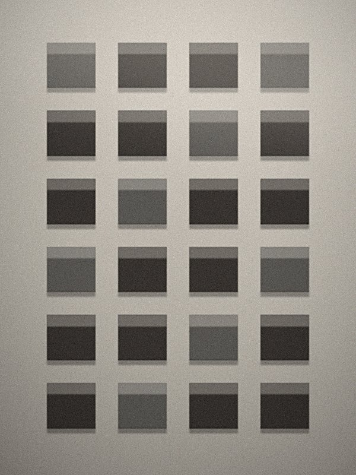
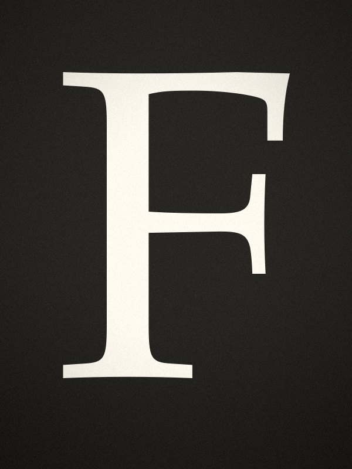
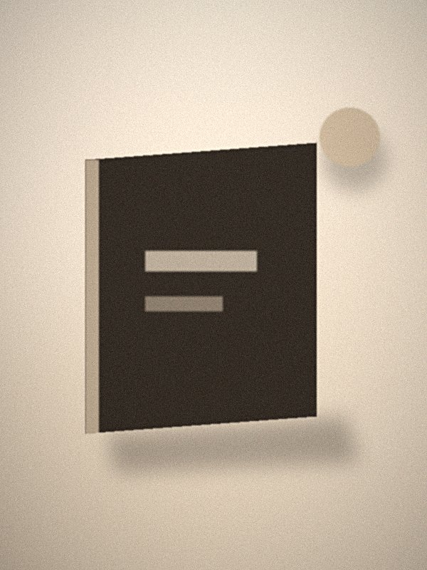
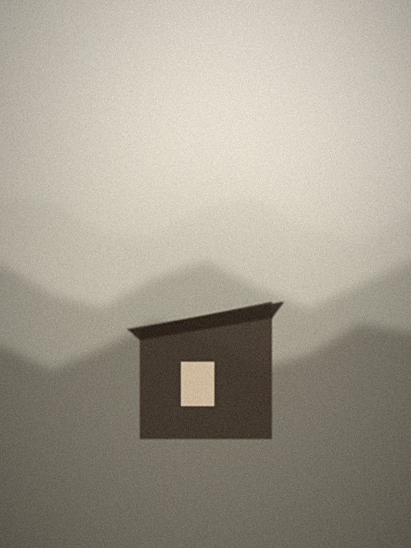
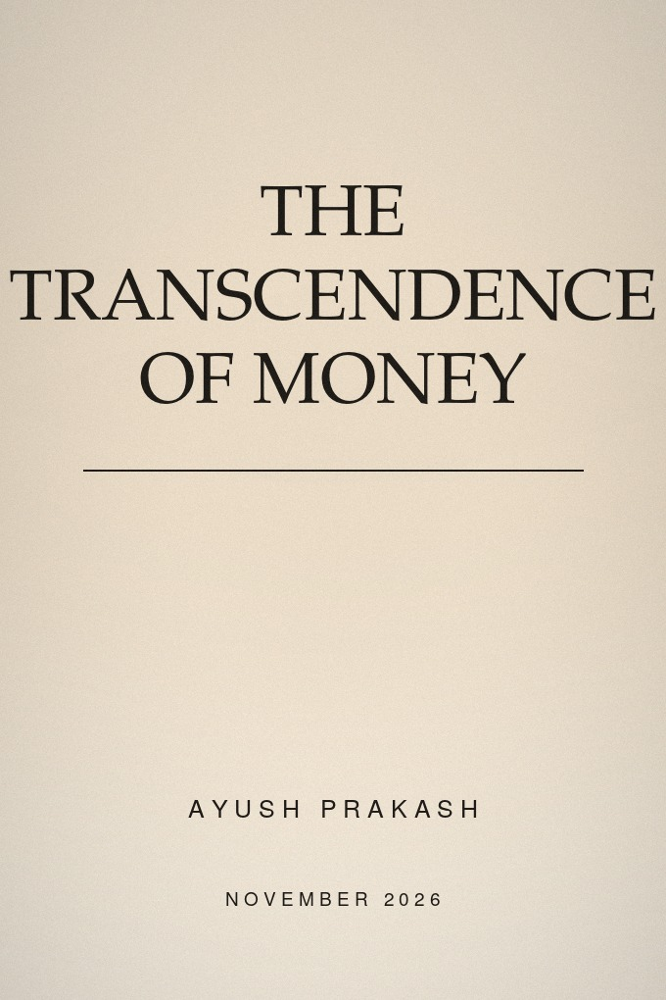
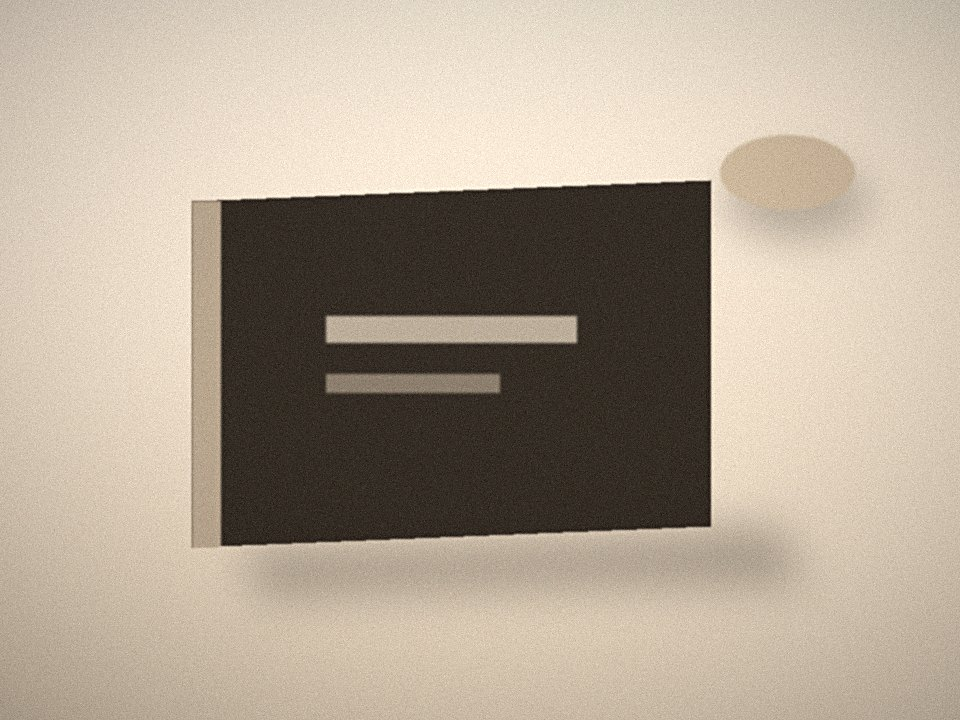

The First AI-Native Generation
Cognition, identity, agency, and beliefs about minds. I translate the emerging research into public frameworks, policy ideas, and cultural understanding.
Current Project
A flagship research report on how sustained interaction with person-like AI affects human development. First edition November 2026.

Flagship Research Programme
Core Question
How do sustained interactions with person-like AI systems affect cognition, identity formation, agency, relationships, epistemic development, and beliefs about minds, especially among young people?
Subsidiary Questions
Outputs
| Output | Status |
|---|---|
| Flagship report, 30–50 pp. | In progress → Nov 2026 |
| Policy brief, 6–10 pp. | In progress → Nov 2026 |
| Developmentally Responsible AI Framework | In development |
| Expert research season, 6 episodes | In production → Feb 2027 |
Methods
Transparent literature review, structured expert interviews, and one original evidence component scoped with qualified academic and ethics support. Findings, hypotheses, and open questions are labeled as such.
Advisory Circle
In formation across developmental psychology, cognitive science, AI governance, and philosophy of mind.
Corrections Log
No corrections to date. Errors in published work are logged here with dates.
The podcast is a research instrument. Episodes feed directly into published work.




Published work, ordered by contribution rather than date.
Out Now
How artificial intelligence lands on the first generation that will never know life without it.
November 2026
A separate project on the future of value.

Three talks, adapted to length and audience.
What sustained interaction with person-like AI does to development. The core research programme, presented as evidence and open questions rather than conclusions.
A framework for building systems that young people grow up inside. Practical, aimed at builders and regulators rather than ethicists.
Why people believe machines have minds, what that belief does to institutions, and what follows for policy.
Booking
Ayush Prakash is Chief of Staff at New Sapience and host of the Ayush Prakash Podcast. He writes on AI and human development, and is based in Montreal. English and French.

Ayush Prakash studies how increasingly person-like AI systems are reshaping cognition, identity, agency, and human development in the first AI-native generation, and translates emerging research into public frameworks, policy ideas, and cultural understanding.
He is Chief of Staff at New Sapience, a deterministic-AI company founded by veterans of DARPA, NASA, and the NSA, where he works on non-LLM machine cognition and leads business operations and institutional capital strategy.
He is the author of AI for Gen Z, co-author of published work with neuroscientist Karl Friston in The Montreal Review and Dr. Ran Anbar in Psychology Today, and host of the Ayush Prakash Podcast: 150+ episodes with researchers and thinkers including Friston and Harvard astrophysicist Avi Loeb.
His current project is The First AI-Native Generation, a flagship research report publishing November 2026.
Based in Montreal. English and French.